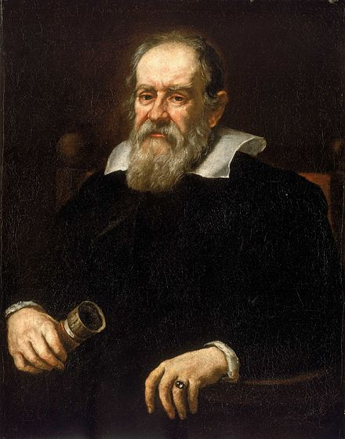
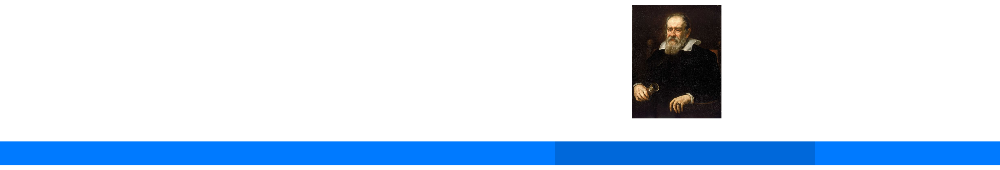

Life Of Galileo Galilei
In Timeline

Feb. 15, 1564
Born
Sep.5 1581
Enrolls in the University of Pisa
1583
Observed the isochronism of a chandelier and invented the pendulum
1586
Published a book about his hydrostatic balance
1588
Get a job as a teacher
1589
Become a mathematics chair
1591
Galileo's father died
1593
Invents a water pump driven by horses
1613
Start To Support Heliocentric, which suggested that the sun is in the central of the universe
1606
Invents the thermoscope, the primitive thermometer
Jun 1609
Invented the telescope and magnified the power of the lens by 30
Nov.1 1609
Discovers the Moon has craters on it. He measured the heights of the mountains based on their shadows
21 Nov 1609
Discovered the Milky Way was made up of stars too far away to be seen by the naked eye
Jan.7 1610
Discovered Ganymede, the largest Moon of Jupiter which supported the Copernican model
Jan.13 1610
Discovered the four satellites orbiting Jupiter
May.1 1611
Observed sunspots moving, which led him to the conclusion that the sun rotates on its own axis
1613
Start To Support Heliocentric, which suggested that the sun is in the central of the universe
Jan.1 1616
Wrote his theory on tides
1632
Galileo's Dialogue Concerning the Two Chief World Systems is published
1638
Galileo's Two Sciences is published in Holland and is now called the kinematics and strength of materials
January 8, 1642
Galileo Galilei Died
Galileo & the Renaissance
The period that Galileo Galilei lives in the Renaissance

How did Galileo Galilei Influence the Renaissance?
The Ways of Experimentations
In the past, the one who controls the religion provide the 'true answers', and the public hace to believe the, in fact, mostly based on faith. And galileo designed a set of rules for experiments that is still being used today. He did not take the results under several different varible values, and he will not believe the statements that out of experiments. These rules is so influential that the scientist in morden age still keep using it, because that is how our morden science works basically.
Change How Mathematics Works
Galileo changed the way that how math works, which is to understand how the world actually works. And he allowed other scientists, like Newton, to build upon his work.
By Peter.L.
Infomation & References
https://www.history.com
https://www.italian-renaissance-art.com/Renaissance-Timeline.html
https://sciencestruck.com/timeline-of-galileos-inventions-discoveries
http://www.softschools.com/timelines/galileo_galilei_timeline/372/
http://galileo.rice.edu/chron/galileo.html
https://www.merriam-webster.com/dictionary/seconda%20prattica
http://www.sackbut.com/
https://en.wikipedia.org/wiki/International_Standard_Book_Number
https://sciencing.com/galileos-effects-science-today-8214085.html